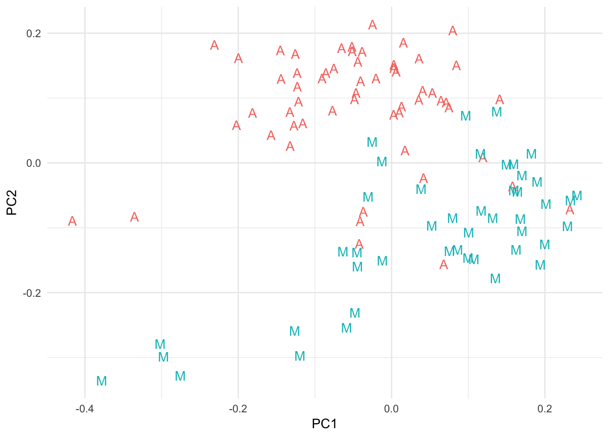
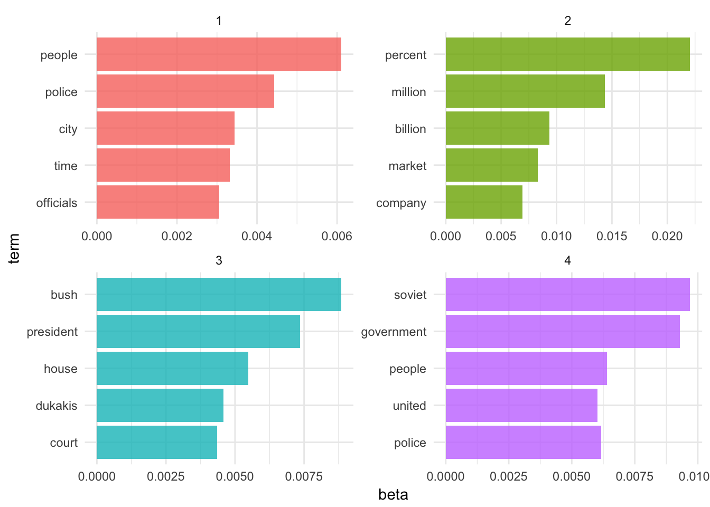

Statistical learning: unsupervised learning
MACS 30100 - Perspectives on Computational Modeling
Objectives
- Distinguish unsupervised learning from supervised learning
- Demonstrate how to estimate and interpret \(K\)-means clustering
- Demonstrate how to estimate and interpret hierarchical clustering
- Define key terms for unsupervised text analysis
- Explain the purpose of dimension reduction techniques
- Demonstrate how to estimate and interpret principal components analysis
- Implement latent semantic analysis using text data
- Introduce Latent Dirchlet allocation and apply it to example data
library(tidyverse)
library(forcats)
library(broom)
library(modelr)
library(stringr)
library(ISLR)
library(titanic)
library(rcfss)
library(grid)
library(gridExtra)
library(ggdendro)
library(tidytext)
library(tm)
library(topicmodels)
options(digits = 3)
set.seed(1234)
theme_set(theme_minimal())Unsupervised learning
Supervised learning methods are used in situations where you have a set of \(p\) predictors \(X_1, X_2, \dots, X_p\) measured on \(n\) observations and you want to explain or predict a response \(Y\) also measured on those \(n\) observations. Unsupervised learning methods differ in that you have a set of \(p\) predictors \(X_1, X_2, \dots, X_p\) measured on \(n\) observations, but you do not have an associated response variable \(Y\). Instead you want to explore the structure and grouping of the observations. Typically unsupervised learning is a more exploratory process because you have no end result you are specifically looking for, and you have no measuring stick to decide if you have the “right” results. At least with supervised learning, you can assess the accuracy or fit of the model and decide how well it performs or compare it to other models. Techinques such as cross-validation and resampling methods can be used to ensure we are not overfitting the training data. But with unsupervised learning this is impossible, because you don’t know the “true” answer.
There are a wide range of unsupervised learning methods, and their use is governed by the type of research question you have. Here we will examine three types of methods: clustering, dimension reduction, and topic modeling.
Clustering methods
Clustering refers to a set of techniques for finding subgroups within a dataset, called clusters. The goal is to partition the dataset into similar and distinct groups so that observations in each group are similar to one another, while each group is distinctive and dissimilar to the other groups.
\(K\)-means clustering
\(K\)-means clustering is one approach to identifying distinct clusters within data. First we specify the number of \(K\) clusters we want to estimate in the data, then assign each observation to precisely one of those \(K\) clusters.
# generate data
x <- data_frame(x1 = rnorm(150) + 3,
x2 = rnorm(150) - 4)
# estimate k clusters
x.out <- x %>%
mutate(k2 = kmeans(x, 2, nstart = 20)$cluster,
k3 = kmeans(x, 3, nstart = 20)$cluster,
k4 = kmeans(x, 4, nstart = 20)$cluster)
# plot clusters
x.out %>%
gather(K, pred, k2:k4) %>%
mutate(K = parse_numeric(K),
pred = factor(pred)) %>%
ggplot(aes(x1, x2, color = pred)) +
facet_grid(. ~ K, labeller = label_both) +
geom_point() +
theme(legend.position = "none")
Let \(C_1, C_2, \dots, C_K\) denote sets containing the indicies of the observations in each cluster. \(K\)-means clustering defines a good cluster as one for which within-cluster variation is as small as possible. So we want to minimize the within-cluster variation defined by some function \(W(C_K)\) that identifies variation:
\[\min_{C_1, C_2, \dots, C_K} \left\{ \sum_{k = 1}^K W(C_k) \right\}\]
so that the overall amount of within-cluster variation across all the clusters is as small as possible. We can define within-cluster variation in several different ways, but a standard approach uses squared Euclidean distance:
\[W(C_k) = \frac{1}{|C_k|} \sum_{i,i' \in C_k} \sum_{j = 1}^p (x_{ij} - x_{i'j})^2\]
where the within-cluster variation is the sum of all of the pairwise squared Euclidean distances between the observations in the \(k\)th cluster, divided by the number of observations in the \(k\)th cluster. Unfortunately we cannot evaluate every possible cluster combination because there are almost \(K^n\) ways to partition \(n\) observations into \(K\) clusters. Instead, we will settle for a good enough approach; that is, rather than finding the global optimum for the optimization problem we will instead estimate the local optimum.
To do this we employ an iterative process. First we randomly assign each observation to one of the \(K\) clusters. This will be the initial cluster assignment for each observation. Then we iterate over the cluster assignments:
- For each of the \(K\) clusters, compute the cluster centroid, or the vector of \(p\) feature means for the observations in the \(k\)th cluster.
- Assign each observation to the cluster whose centroid is closest as defined by Euclidean distance.
Each time we do this observations will move around and join different clusters because the initial assignments were made entirely at random. As we iterate over this process, the cluster assignments will become more stable and eventually stop entirely. This is when we reach the local optimum. Since the local optimum is based on the initial (random) assignments, we run this algorithm multiple times from different random starting configurations and select the best solution (the one with the lowest total within-cluster variation).
kmean.out <- rerun(6, kmeans(x, 3, nstart = 1))
kmean.out %>%
map_df(~ as_tibble(.$cluster), .id = "id") %>%
bind_cols(bind_rows(x,x,x,x,x,x)) %>%
mutate(withinss = rep(map_chr(kmean.out, ~ .$tot.withinss), each = nrow(x)),
value = factor(value)) %>%
ggplot(aes(x1, x2, color = value)) +
facet_wrap(~ id + withinss, ncol = 3, labeller = label_wrap_gen(multi_line = FALSE)) +
geom_point() +
theme(legend.position = "none")
This is basically like starting the algorithm with a different random seed each time. In the above example I ran $K-mean clustering with \(K=4\) six times with different starting seed values. In four of the iterations, the algorithm converged on the same local optimum solution, while the other two times the algorithm converged on a local optimum with a larger sum of within-cluster variation.
Hierarchical clustering
A drawback to \(K\)-means clustering is that it requires you to specify in advance the number of clusters in the data. Since this is unsupervised learning, you don’t really know the actual number of clusters. Depending on the major features of the data, different values of \(K\) could produce equally meaningful results. Imagine if your data contains observations on individuals, split between males and females as well as split between Americans, Canadians, and South Africans. \(K=2\) would potentially cluster the observations based on gender, whereas \(K=3\) could cluster based on nationality. Which is “right”? Well, both of them. It depends on the features of the data in which you are most interested.
Hierarchical clustering is an alternative approach that does not require us to fix the number of clusters a priori. It also produces a visual interpretation of the clusters using tree-based representations called dendrograms. Here let’s review how to interpret dendrograms generated from bottom-up clustering.
Interpreting dendrograms
Here we plot a dendrogram using simulated data, consisting of 150 observations in two-dimensional space. We simulate three natural classes in the data, but in the real-world you would not know that.
# generate data
x <- data_frame(x1 = rnorm(50) + 3,
x2 = rnorm(50) - 4,
y = ifelse(x1 < 3, "1",
ifelse(x2 > -4, "2", "3")))
ggplot(x, aes(x1, x2, color = y)) +
geom_point() +
labs(title = "Simulated data",
x = expression(X[1]),
y = expression(X[2])) +
theme(legend.position = "none")
Suppose that we observe the data without class labels and want to perform hierarchical clustering on the data. The result is plotted below.
# estimate hierarchical cluster
hc.complete <- hclust(dist(x), method = "complete")
# plot
ggdendrogram(hc.complete)
Like with decision trees, we have leafs and branches. Each leaf is labeled with the observation id number. Rather than reading the dendrogram from the top-down, we read it from the bottom-up. Each observation is represented by a leaf. As we move up the tree, leafs fuse into branches. These are observations that are similar to one another, similarity generally being defined by Euclidean distance. Observations that fuse together near the bottom of the tree are generally similar to one another, whereas observations that fuse near the top of the tree are dissimilar. The height on the graph where the fusion occurs defines how similar or dissimilar any two observations are. The larger the value, the more dissimilar they are. Rather than paying attention to the proximity of observations along the horizontal axis, we should instead focus on the location of observations relative to the vertical axis.
From this dendrogram we can assign observations to clusters. To generate clusters, we make a horizontal cut somewhere on the dendrogram, severing the tree into multiple subtrees. The height of the cut will dictate how many clusters are formed. For instance, cutting the tree at a height of 4 splits the dendrogram into two subtrees, and therefore two clusters:
h <- 4
# extract dendro data
hcdata <- dendro_data(hc.complete)
hclabs <- label(hcdata) %>%
left_join(data_frame(label = as.factor(seq.int(nrow(x))),
cl = as.factor(cutree(hc.complete, h = h))))
# plot dendrogram
ggdendrogram(hc.complete, labels = FALSE) +
geom_text(data = hclabs,
aes(label = label, x = x, y = 0, color = cl),
vjust = .5, angle = 90) +
geom_hline(yintercept = h, linetype = 2) +
theme(axis.text.x = element_blank(),
legend.position = "none")
Alternatively we could split it lower, for instance at 3:
h <- 3
# extract dendro data
hcdata <- dendro_data(hc.complete)
hclabs <- label(hcdata) %>%
left_join(data_frame(label = as.factor(seq.int(nrow(x))),
cl = as.factor(cutree(hc.complete, h = h))))
# plot dendrogram
ggdendrogram(hc.complete, labels = FALSE) +
geom_text(data = hclabs,
aes(label = label, x = x, y = 0, color = cl),
vjust = .5, angle = 90) +
geom_hline(yintercept = h, linetype = 2) +
theme(axis.text.x = element_blank(),
legend.position = "none")
Generating a larger number of clusters. Determining the optimal number of clusters is generally left to the discretion of the researcher based on the height of the fusions and desired number of clusters. Again, this is unsupervised learning so there is no single correct number of clusters.
Estimating hierarchical clusters
The general procedure for estimating hierarchical clusters is relatively straightforward:
- Assume each \(n\) observation is its own cluster. Calculate the \(\binom{n}{2} = \frac{n(n-1)}{2}\) pairwise dissimilarities between each observation.1
- For \(i=n, n-1, \dots, 2\):
- Compare all pairwise inter-cluster dissimilarities among the \(i\) clusters and identify the pair of clusters that are least dissimilar (i.e. most dissimilar). Fuse these two clusters. The dissimilarity between these two clusters determines the height in the dendrogram where the fusion should be placed.
- Compute the new pairwise inter-cluster dissimilarities among the \(i-1\) clusters
This process is continued until there is only a single cluster remaining. The only complication is how to measure dissimilarities between clusters once they contain more than one observation. Previously we used pairwise dissimilarities of the observations, but how do we proceed with multiple observations? There are four major approaches to defining dissimilarity between clusters, also called linkage:
- Complete - compute all pairwise dissimilarities between observations in cluster A and cluster B and record the largest of these dissimilarities.
- Single - compute all pairwise dissimilarities between observations in cluster A and cluster B and record the smallest of these dissimilarities.
- Average - compute all pairwise dissimilarities between observations in cluster A and cluster B and record the average of these dissimilarities.
- Centroid - compute the dissimilarity between the centroid (a mean vector of length \(p\)) for cluster A and cluster B.
Each linkage approach leads to different hierarchical clusters:
hc.complete <- hclust(dist(x), method = "complete")
hc.single <- hclust(dist(x), method = "single")
hc.average <- hclust(dist(x), method = "average")
# plot
ggdendrogram(hc.complete) +
labs(title = "Complete linkage")
ggdendrogram(hc.single) +
labs(title = "Single linkage")
ggdendrogram(hc.average) +
labs(title = "Average linkage")
Dimension reduction
Another possible application of unsupervised learning is to reduce the number of dimensions in a dataset. There are a couple reasons you might do this:
- You want to visualize the data but you have a lot of variables. You could generate something like a scatterplot matrix, but once you have more than a handful of variables even these become difficult to interpret.
- You want to use the variables in a supervised learning framework, but reduce the total number of predictors to make the estimation more efficient.
In either case, the goal is to reduce the dimensionality of the data by identifying a smaller number of representative variables that collectively explain most of the variability in the original dataset. There are several methods available for performing such a task. First we will examine an example of applying dimension reduction techniques to summarize roll-call voting in the United States
Application: DW-NOMINATE
In the 1990s, dimension reduction techniques revolutionized the study of U.S. legislative politics. Measuring the ideology of legislators prior to this point was difficult because there was no method for locating legislators along an ideological spectrum (liberal-conservative) in a manner that allowed comparisons over time. That is, how liberal was a Democrat in 1870 compared to a Democrat in 1995? Additionally, supposed you wanted to predict how a legislator would vote on a given bill. Roll-call votes record individual legislator behavior, so you could use past votes to predict future ones. But there have been tens of thousands of recorded votes over the course of the U.S. Congress. Even in a given term of Congress, the Senate may cast hundreds of recorded votes. But there are only 100 senators (at present), and you cannot estimate a regression model when your number of predictors \(p\) is larger than your number of observations \(n\). We need some method for reducing the dimensionality of this data to a handful of variables which explain as much of the variation in roll-call voting as possible.
Multidimensional scaling techniques can be used to perform this feat. The technical details of this specific application are beyond the scope of this class, but Keith Poole and Howard Rosenthal developed a specific procedure called NOMINATE to reduce the dimensionality of the data. Rather than using \(p\) predictors to explain or predict individual legislator’s roll-call votes, where \(p\) is the total number of roll-call votes in the recorded history of the U.S. Congress, Poole and Rosenthal examined the similarity of legislators’ votes in a given session of Congress and over time to identify two major dimensions to roll-call voting in the U.S. Congress. That is, roll-call votes in Congress can generally be explained by two variables that can be estimated for every past and present member of Congress. The two dimensions do not have any inherent substantive interpretation, but by graphically examining the two dimensions, it becomes clear that they represent two specific factors in legislative voting:
- First dimension - political ideology. This dimension appears to represent political ideology on the liberal-conservative spectrum. Positive values on this dimension refer to increasingly conservative voting patterns, and negative values refer to increasingly liberal voting patterns.
- Second dimension - “issue of the day”. This dimension appears to pick up on attitudes that are salient at different points in the nation’s history. They could be regional differences (Southern vs. non-Southern states), or attitudes towards specific policy issues (i.e. slavery).
This data can be used for a wide range of research questions. For example, we could use it to assess the degree of polarization in the U.S. Congress over time:


Principal components analysis
Principal components analysis (PCA) is a basic technique for dimension reduction. The goal is to find a low-dimensional representation of the data that contains as much as possible of the variation. Each dimension is a linear combination of the \(p\) variables.
The first principal component of a set of variables \(X_1, X_2, \dots, X_p\) is the normalized linear combination of the features
\[Z_1 = \phi_{11}X_1 + \phi_{21}X_2 + \dots + \phi_{p1}X_p\]
that has the largest variance. By normalizing the features, we mean
\[\sum_{j=1}^p \phi_{j1}^2 = 1\]
The elements of \(\phi_{11}, \dots, \phi_{p1}\) are known as the loadings of the first principal component, and combined together they form the principal component loading vector \(\phi_1 = (\phi_{11}, \dots, \phi_{p1})^T\). The number of individual loadings on the first principal component is \(p\).
Estimating the first principal component follows the following procedure. Since we are only interested in variance, we assume each column in the \(n\times p\) data set \(\mathbf{X}\) has mean zero and look for the linear combination of the sample column values of the form
\[z_{i1} = \phi_{11}x_{i1} + \phi_{21}x_{i2} + \dots + \phi_{p1} x_{ip}\]
that has the largest sample variance, subject to the constraint \(\sum_{j=1}^p \phi_{j1}^2 = 1\).
The result of this optimization problem is a loading vector \(\phi_1\) with elements \(\phi_{11}, \phi_{21}, \dots, \phi_{p1}\) that defines a direction in feature space along which the data vary the most. We can estimate the second, third, and \(n\)th principal components using a similar process. The second principal component is the linear combination of \(X_1, X_2, \dots, X_p\) that has the maximum variance out of all linear combinations that are uncorrelated with \(Z_1\). Another way of thinking about this is that the second principal component is orthogonal (perpendicular) to the first principal component. If the data is two-dimensional (\(p=2\)) then there is only one possible value for \(\phi_2\).
The total number of principal components for a given \(n \times p\) data set is \(\min(n,p)\), either the number of observations in the data or the number of variables in the data (whichever is smaller). Once we estimate the principal components, we can plot them against each other in order to produce a low-dimensional visualization of the data. Let’s look at the use of PCA on the USArrests dataset, reproduced from An Introduction to Statistical Learning.
pr.out <- prcomp(USArrests, scale = TRUE)
pr.out$rotation## PC1 PC2 PC3 PC4
## Murder -0.536 0.418 -0.341 0.649
## Assault -0.583 0.188 -0.268 -0.743
## UrbanPop -0.278 -0.873 -0.378 0.134
## Rape -0.543 -0.167 0.818 0.089biplot(pr.out, scale = 0, cex = .6)
The principal component score vectors have length \(n=50\) and the principal component loading vectors have length \(p=4\) (in this data set, \(p < n\)). The biplot visualizes the relationship between the first two principal components for the dataset, including both the scores and the loading vectors. The first principal component places approximately equal weight on murder, assault, and rape. We can tell this because these vectors’ length on the first principal component dimension are roughly the same, whereas the length for urban population is smaller. Conversely, the second principal component (the vertical axis) places more emphasis on urban population. Intuitively this makes sense because murder, assault, and rape are all measures of violent crime, and it makes sense that they should be correlated with one another (i.e. states with high murder rates are likely to have high rates of rape as well).
We can also interpret the plot for individual states based on their positions along the two dimensions. States with large positive values on the first principal component have high crime rates while states with large negative values have low crime rates; states with large positive values on the second principal component have high levels of urbanization while states with large negative values have low levels of urbanization.
Latent semantic analysis
Text documents can be utilized in computational text analysis under the bag of words approach.2 Documents are represented as vectors, and each variable counts the frequency a word appears in a given document. While we throw away information such as word order, we can represent the information in a mathematical fashion using a matrix. Each row represents a single document, and each column is a different word:
a abandoned abc ability able about above abroad absorbed absorbing abstract
43 0 0 0 0 10 0 0 0 0 1These vectors can be very large depending on the dictionary, or the number of unique words in the dataset. These bag-of-words vectors have three important properties:
- They are sparse. Most entries in the matrix are zero.
- A small number of words appear frequently across all documents. These are typically uninformative words called stop words that inform us nothing about the document (e.g. “a”, “an”, “at”, “of”, “or”).
- Other than these words, the other words in the dataset are correlated with some words but not others. Words typically come together in related bunches.
Considering these three properties, we probably don’t need to keep all of the words. Instead, we could reduce the dimensionality of the data by projecting the larger dataset into a smaller feature space with fewer dimensions that summarize most of the variation in the data. Each dimension would represent a set of correlated words. Principal component analysis can be used for precisely this task.
In a textual context, this process is known as latent semantic analysis. By identifying words that are closely related to one another, when searching for just one of the terms we can find documents that use not only that specific term but other similar ones. Think about how you search for information online. You normally identify one or more keywords, and search for pages that are related to those words. But search engines use techniques such as LSA to retrieve results not only for pages that use your exact word(s), but also pages that use similar or related words.
Interpretation: NYTimes
# get NYTimes data
load("data/pca-examples.Rdata")Let’s look at an application of LSA. nyt.frame contains a document-term matrix of a random sample of stories from the New York Times: 57 stories are about art, and 45 are about music. The first column identifies the topic of the article, and each remaining cell contains a frequency count of the number of times each word appeared in that article.3 The resulting data frame contains 102 rows and 4432 columns.
Some examples of words appearing in these articles:
colnames(nyt.frame)[sample(ncol(nyt.frame),30)]## [1] "penchant" "brought" "structure" "willing" "yielding"
## [6] "bare" "school" "halls" "challenge" "step"
## [11] "largest" "lovers" "intense" "borders" "mall"
## [16] "classic" "conducted" "mirrors" "hole" "location"
## [21] "desperate" "published" "head" "paints" "another"
## [26] "starts" "familiar" "window" "thats" "broker"We can estimate the LSA using the standard PCA procedure:
# Omit the first column of class labels
nyt.pca <- prcomp(nyt.frame[,-1])
# Extract the actual component directions/weights for ease of reference
nyt.latent.sem <- nyt.pca$rotation
# convert to data frame
nyt.latent.sem <- nyt.latent.sem %>%
as_tibble %>%
mutate(word = names(nyt.latent.sem[,1])) %>%
select(word, everything())Let’s extract the biggest components for the first principal component:
nyt.latent.sem %>%
select(word, PC1) %>%
arrange(PC1) %>%
slice(c(1:10, (n() - 10):n())) %>%
mutate(pos = ifelse(PC1 > 0, TRUE, FALSE),
word = fct_reorder(word, PC1)) %>%
ggplot(aes(word, PC1, fill = pos)) +
geom_col() +
labs(title = "LSA analysis of NYTimes articles",
x = NULL,
y = "PC1 scores") +
coord_flip() +
theme(legend.position = "none")
These are the 10 words with the largest positive and negative loadings on the first principal component. The words on the positive loading seem associated with music, whereas the words on the negative loading are more strongly associated with art.
nyt.latent.sem %>%
select(word, PC2) %>%
arrange(PC2) %>%
slice(c(1:10, (n() - 10):n())) %>%
mutate(pos = ifelse(PC2 > 0, TRUE, FALSE),
word = fct_reorder(word, PC2)) %>%
ggplot(aes(word, PC2, fill = pos)) +
geom_col() +
labs(title = "LSA analysis of NYTimes articles",
x = NULL,
y = "PC2 scores") +
coord_flip() +
theme(legend.position = "none")
Here the positive words are about art, but more focused on acquiring and trading (“donations”, “tax”). We could perform similar analysis on each of the 103 principal components, but if the point of LSA/PCA is to reduce the dimensionality of the data, let’s just focus on the first two for now.
biplot(nyt.pca, scale = 0, cex = .6)
cbind(type = nyt.frame$class.labels, as_tibble(nyt.pca$x[,1:2])) %>%
mutate(type = factor(type, levels = c("art", "music"),
labels = c("A", "M"))) %>%
ggplot(aes(PC1, PC2, label = type, color = type)) +
geom_text() +
labs(title = "")
theme(legend.position = "none")## List of 1
## $ legend.position: chr "none"
## - attr(*, "class")= chr [1:2] "theme" "gg"
## - attr(*, "complete")= logi FALSE
## - attr(*, "validate")= logi TRUEThe biplot looks a bit ridiculous because there are 4432 variables to map onto the principal components. Only a few are interpretable. If we instead just consider the articles themselves, even after throwing away the vast majority of information in the original data set the first two principal components still strongly distinguish the two types of articles. If we wanted to use PCA to reduce the dimensionality of the data and predict an article’s topic using a method such as SVM, we could probably generate a pretty good model using just the first two dimensions of the PCA rather than all the individual variables (words).
Topic modeling
Text documents can also be modeled and explored thematically. For instance, David Blei proposes searching through the complete history of the New York Times. Broad themes may relate to the individual sections in the paper (foreign policy, national affairs, sports) but there might be specific themes within or across these sections (Chinese foreign policy, the conflict in the Middle East, the U.S.’s relationship with Russia). If the documents are grouped by these themes, we could track the evolution of the NYT’s reporting on these issues over time, or examine how discussion of different themes intersects.
In order to do this, we would need detailed information on the theme of every article. Hand-coding this corpus would be exceedingly time-consuming, not to mention would requiring knowing the thematic structure of the documents before one even begins coding. For the vast majority of corpa, this is not a feasible approach.
Instead, we can use probabilistic topic models, statistical algorithms that analyze words in original text documents to uncover the thematic structure of the both the corpus and individual documents themselves. They do not require any hand coding or labeling of the documents prior to analysis - instead, the algorithms emerge from the analysis of the text.
Latent Dirichlet allocation
LDA assumes that each document in a corpus contains a mix of topics that are found throughout the entire corpus. The topic structure is hidden - we can only observe the documents and words, not the topics themselves. Because the structure is hidden (also known as latent), this method seeks to infer the topic structure given the known words and documents.
Food and animals
Suppose you have the following set of sentences:
- I ate a banana and spinach smoothie for breakfast.
- I like to eat broccoli and bananas.
- Chinchillas and kittens are cute.
- My sister adopted a kitten yesterday.
- Look at this cute hamster munching on a piece of broccoli.
Latent Dirichlet allocation is a way of automatically discovering topics that these sentences contain. For example, given these sentences and asked for 2 topics, LDA might produce something like
- Sentences 1 and 2: 100% Topic A
- Sentences 3 and 4: 100% Topic B
Sentence 5: 60% Topic A, 40% Topic B
- Topic A: 30% broccoli, 15% bananas, 10% breakfast, 10% munching, …
Topic B: 20% chinchillas, 20% kittens, 20% cute, 15% hamster, …
You could infer that topic A is a topic about food, and topic B is a topic about cute animals. But LDA does not explicitly identify topics in this manner. All it can do is tell you the probability that specific words are associated with the topic.
An LDA document structure
LDA represents documents as mixtures of topics that spit out words with certain probabilities. It assumes that documents are produced in the following fashion: when writing each document, you
- Decide on the number of words \(N\) the document will have
- Choose a topic mixture for the document (according to a Dirichlet probability distribution over a fixed set of \(K\) topics). For example, assuming that we have the two food and cute animal topics above, you might choose the document to consist of 1/3 food and 2/3 cute animals.
- Generate each word in the document by:
- First picking a topic (according to the distribution that you sampled above; for example, you might pick the food topic with 1/3 probability and the cute animals topic with 2/3 probability).
- Then using the topic to generate the word itself (according to the topic’s multinomial distribution). For instance, the food topic might output the word “broccoli” with 30% probability, “bananas” with 15% probability, and so on.
Assuming this generative model for a collection of documents, LDA then tries to backtrack from the documents to find a set of topics that are likely to have generated the collection.
Food and animals
How could we have generated the sentences in the previous example? When generating a document \(D\):
- Decide that \(D\) will be 1/2 about food and 1/2 about cute animals.
- Pick 5 to be the number of words in \(D\).
- Pick the first word to come from the food topic, which then gives you the word “broccoli”.
- Pick the second word to come from the cute animals topic, which gives you “panda”.
- Pick the third word to come from the cute animals topic, giving you “adorable”.
- Pick the fourth word to come from the food topic, giving you “cherries”.
- Pick the fifth word to come from the food topic, giving you “eating”.
So the document generated under the LDA model will be “broccoli panda adorable cherries eating” (remember that LDA uses a bag-of-words model).
Learning topic structure through LDA
Now suppose you have a set of documents. You’ve chosen some fixed number of \(K\) topics to discover, and want to use LDA to learn the topic representation of each document and the words associated to each topic. How do you do this? One way (known as collapsed Gibbs sampling) is the following:
- Go through each document, and randomly assign each word in the document to one of the \(K\) topics
- Notice that this random assignment already gives you both topic representations of all the documents and word distributions of all the topics. But because it’s random, this is not a very accurate structure.
- To improve on them, for each document \(d\):
- Go through each word \(w\) in \(d\)
- And for each topic \(t\), compute two things:
- The proportion of words in document \(d\) that are currently assigned to topic \(t\) - \(p(t | d)\)
- The proportion of assignments to topic \(t\) over all documents that come from this word \(w\) - \(p(w | t)\)
- Reassign \(w\) a new topic, where you choose topic \(t\) with probability \(p(t|d) \times p(w|t)\) - this is the probability that topic \(t\) generated word \(w\)
- In other words, in this step, we’re assuming that all topic assignments except for the current word in question are correct, and then updating the assignment of the current word using our model of how documents are generated.
- And for each topic \(t\), compute two things:
- Go through each word \(w\) in \(d\)
- After repeating the previous step a large number of times (really large number of times, like a minimum of 10,000), you’ll eventually reach a roughly steady state where your assignments are pretty good
- You can use these assignments to estimate two things:
- The topic mixtures of each document (by counting the proportion of words assigned to each topic within that document)
- The words associated to each topic (by counting the proportion of words assigned to each topic overall)
Frequently when using LDA, you don’t actually know the underlying topic structure of the documents. Generally that is why you are using LDA to analyze the text in the first place. LDA is still useful in these instances, but we have to perform additional tests and analysis to confirm that the topic structure uncovered by LDA is a good structure.
Associated Press articles
The topicmodels package includes a document-term matrix of a sample of articles published by the Associated Press in 1992. Let’s load them into R and estimate a series of LDA models.
data("AssociatedPress", package = "topicmodels")
# tidy and remove stop words
ap_td <- tidy(AssociatedPress)ap_dtm <- ap_td %>%
anti_join(stop_words, by = c(term = "word")) %>%
cast_dtm(document, term, count)
ap_dtm## <<DocumentTermMatrix (documents: 2246, terms: 10134)>>
## Non-/sparse entries: 259208/22501756
## Sparsity : 99%
## Maximal term length: 18
## Weighting : term frequency (tf)Selecting \(k\)
Remember that for LDA, you need to specify in advance the number of topics in the underlying topic structure.
\(k=4\)
Let’s estimate an LDA model for the Associated Press articles, setting \(k=4\).
ap_lda <- LDA(ap_dtm, k = 4, control = list(seed = 1234))
ap_lda## A LDA_VEM topic model with 4 topics.What do the top terms for each of these topics look like?
ap_lda_td <- tidy(ap_lda)
top_terms <- ap_lda_td %>%
group_by(topic) %>%
top_n(5, beta) %>%
ungroup() %>%
arrange(topic, -beta)
top_terms## # A tibble: 20 × 3
## topic term beta
## <int> <chr> <dbl>
## 1 1 people 0.00610
## 2 1 police 0.00442
## 3 1 city 0.00344
## 4 1 time 0.00332
## 5 1 officials 0.00306
## 6 2 percent 0.02205
## 7 2 million 0.01434
## 8 2 billion 0.00935
## 9 2 market 0.00830
## 10 2 company 0.00694
## 11 3 bush 0.00884
## 12 3 president 0.00736
## 13 3 house 0.00548
## 14 3 dukakis 0.00459
## 15 3 court 0.00436
## 16 4 soviet 0.00969
## 17 4 government 0.00930
## 18 4 people 0.00639
## 19 4 police 0.00616
## 20 4 united 0.00602top_terms %>%
mutate(term = reorder(term, beta)) %>%
ggplot(aes(term, beta, fill = factor(topic))) +
geom_bar(alpha = 0.8, stat = "identity", show.legend = FALSE) +
facet_wrap(~ topic, scales = "free", ncol = 2) +
coord_flip()
Fair enough. The four topics generally look to describe:
- American-Soviet relations
- Crime and education
- American (domestic) government
- It’s the economy, stupid
\(k=12\)
What happens if we set \(k=12\)? How do our results change?
ap_lda <- LDA(ap_dtm, k = 12, control = list(seed = 1234))
ap_lda## A LDA_VEM topic model with 12 topics.ap_lda_td <- tidy(ap_lda)
top_terms <- ap_lda_td %>%
group_by(topic) %>%
top_n(5, beta) %>%
ungroup() %>%
arrange(topic, -beta)
top_terms## # A tibble: 60 × 3
## topic term beta
## <int> <chr> <dbl>
## 1 1 air 0.00847
## 2 1 people 0.00613
## 3 1 miles 0.00601
## 4 1 officials 0.00573
## 5 1 fire 0.00570
## 6 2 bush 0.01805
## 7 2 dukakis 0.01612
## 8 2 campaign 0.01273
## 9 2 president 0.00990
## 10 2 democratic 0.00841
## # ... with 50 more rowstop_terms %>%
mutate(term = reorder(term, beta)) %>%
ggplot(aes(term, beta, fill = factor(topic))) +
geom_bar(alpha = 0.8, stat = "identity", show.legend = FALSE) +
facet_wrap(~ topic, scales = "free", ncol = 3) +
coord_flip()
Hmm. Well, these topics appear to be more specific, yet not as easily decodeable.
- Iraq War (I)
- Bush’s reelection campaign
- Federal courts
- Apartheid and South Africa
- Crime
- Economy
- ???
- Soviet Union
- Environment
- Stock market
- Wildfires?
- Bush-Congress relations (maybe domestic policy?)
Alas, this is the problem with LDA. Several different values for \(k\) may be plausible, but by increasing \(k\) we sacrifice clarity. Is there any statistical measure which will help us determine the optimal number of topics?
Perplexity
Well, sort of. Some aspects of LDA are driven by gut-thinking (or perhaps truthiness). However we can have some help. Perplexity is a statistical measure of how well a probability model predicts a sample. As applied to LDA, for a given value of \(k\), you estimate the LDA model. Then given the theoretical word distributions represented by the topics, compare that to the actual topic mixtures, or distribution of words in your documents.
topicmodels includes the function perplexity() which calculates this value for a given model.
perplexity(ap_lda)## [1] 2265However, the statistic is somewhat meaningless on its own. The benefit of this statistic comes in comparing perplexity across different models with varying \(k\)s. The model with the lowest perplexity is generally considered the “best”.
Let’s estimate a series of LDA models on the Associated Press dataset. Here I make use of purrr and the map() functions to iteratively generate a series of LDA models for the AP corpus, using a different number of topics in each model.4
n_topics <- c(2, 4, 10, 20, 50, 100)
if(file.exists("extras/ap_lda_compare.Rdata")){
load(file = "extras/ap_lda_compare.Rdata")
} else{
ap_lda_compare <- n_topics %>%
map(LDA, x = ap_dtm, control = list(seed = 1234))
save(ap_lda_compare, file = "extras/ap_lda_compare.Rdata")
}data_frame(k = n_topics,
perplex = map_dbl(ap_lda_compare, perplexity)) %>%
ggplot(aes(k, perplex)) +
geom_point() +
geom_line() +
labs(title = "Evaluating LDA topic models",
subtitle = "Optimal number of topics (smaller is better)",
x = "Number of topics",
y = "Perplexity")
It looks like the 100-topic model has the lowest perplexity score. What kind of topics does this generate? Let’s look just at the first 12 topics produced by the model (ggplot2 has difficulty rendering a graph for 100 separate facets):
ap_lda_td <- tidy(ap_lda_compare[[6]])
top_terms <- ap_lda_td %>%
group_by(topic) %>%
top_n(5, beta) %>%
ungroup() %>%
arrange(topic, -beta)
top_terms## # A tibble: 500 × 3
## topic term beta
## <int> <chr> <dbl>
## 1 1 president 0.00802
## 2 1 oil 0.00562
## 3 1 people 0.00553
## 4 1 embassy 0.00526
## 5 1 television 0.00518
## 6 2 convention 0.01627
## 7 2 york 0.01024
## 8 2 dukakis 0.00849
## 9 2 national 0.00693
## 10 2 jackson 0.00647
## # ... with 490 more rowstop_terms %>%
filter(topic <= 12) %>%
mutate(term = reorder(term, beta)) %>%
ggplot(aes(term, beta, fill = factor(topic))) +
geom_bar(alpha = 0.8, stat = "identity", show.legend = FALSE) +
facet_wrap(~ topic, scales = "free", ncol = 3) +
coord_flip()
We are getting even more specific topics now. The question becomes how would we present these results and use them in an informative way? Not to mention perplexity was still dropping at \(k=100\) - would \(k=200\) generate an even lower perplexity score?5
Again, this is where your intuition and domain knowledge as a researcher is important. You can use perplexity as one data point in your decision process, but a lot of the time it helps to simply look at the topics themselves and the highest probability words associated with each one to determine if the structure makes sense. If you have a known topic structure you can compare it to (such as the books example above), this can also be useful.
Session Info
devtools::session_info()## setting value
## version R version 3.3.2 (2016-10-31)
## system x86_64, darwin13.4.0
## ui X11
## language (EN)
## collate en_US.UTF-8
## tz America/Chicago
## date 2017-03-08
##
## package * version date source
## assertthat 0.1 2013-12-06 CRAN (R 3.3.0)
## backports 1.0.5 2017-01-18 CRAN (R 3.3.2)
## broom * 0.4.2 2017-02-13 CRAN (R 3.3.2)
## codetools 0.2-15 2016-10-05 CRAN (R 3.3.2)
## colorspace 1.3-2 2016-12-14 CRAN (R 3.3.2)
## DBI 0.5-1 2016-09-10 CRAN (R 3.3.0)
## devtools 1.12.0 2016-06-24 CRAN (R 3.3.0)
## digest 0.6.12 2017-01-27 CRAN (R 3.3.2)
## dplyr * 0.5.0 2016-06-24 CRAN (R 3.3.0)
## evaluate 0.10 2016-10-11 CRAN (R 3.3.0)
## forcats * 0.2.0 2017-01-23 CRAN (R 3.3.2)
## foreign 0.8-67 2016-09-13 CRAN (R 3.3.2)
## ggdendro * 0.1-20 2017-02-27 local
## ggplot2 * 2.2.1 2016-12-30 CRAN (R 3.3.2)
## gridExtra * 2.2.1 2016-02-29 cran (@2.2.1)
## gtable 0.2.0 2016-02-26 CRAN (R 3.3.0)
## haven 1.0.0 2016-09-23 cran (@1.0.0)
## hms 0.3 2016-11-22 CRAN (R 3.3.2)
## htmltools 0.3.5 2016-03-21 CRAN (R 3.3.0)
## httr 1.2.1 2016-07-03 CRAN (R 3.3.0)
## ISLR * 1.0 2013-06-11 CRAN (R 3.3.0)
## janeaustenr 0.1.4 2016-10-26 CRAN (R 3.3.0)
## jsonlite 1.2 2016-12-31 CRAN (R 3.3.2)
## knitr 1.15.1 2016-11-22 cran (@1.15.1)
## labeling 0.3 2014-08-23 CRAN (R 3.3.0)
## lattice 0.20-34 2016-09-06 CRAN (R 3.3.2)
## lazyeval 0.2.0 2016-06-12 CRAN (R 3.3.0)
## lubridate 1.6.0 2016-09-13 CRAN (R 3.3.0)
## magrittr 1.5 2014-11-22 CRAN (R 3.3.0)
## MASS 7.3-45 2016-04-21 CRAN (R 3.3.2)
## Matrix 1.2-8 2017-01-20 CRAN (R 3.3.2)
## memoise 1.0.0 2016-01-29 CRAN (R 3.3.0)
## mnormt 1.5-5 2016-10-15 CRAN (R 3.3.0)
## modelr * 0.1.0 2016-08-31 CRAN (R 3.3.0)
## modeltools 0.2-21 2013-09-02 CRAN (R 3.3.0)
## munsell 0.4.3 2016-02-13 CRAN (R 3.3.0)
## nlme 3.1-131 2017-02-06 CRAN (R 3.3.2)
## NLP * 0.1-9 2016-02-18 CRAN (R 3.3.0)
## plyr 1.8.4 2016-06-08 CRAN (R 3.3.0)
## psych 1.6.12 2017-01-08 CRAN (R 3.3.2)
## purrr * 0.2.2 2016-06-18 CRAN (R 3.3.0)
## R6 2.2.0 2016-10-05 CRAN (R 3.3.0)
## rcfss * 0.1.4 2017-02-28 local
## Rcpp 0.12.9 2017-01-14 CRAN (R 3.3.2)
## readr * 1.0.0 2016-08-03 CRAN (R 3.3.0)
## readxl 0.1.1 2016-03-28 CRAN (R 3.3.0)
## reshape2 1.4.2 2016-10-22 CRAN (R 3.3.0)
## rmarkdown 1.3 2016-12-21 CRAN (R 3.3.2)
## rprojroot 1.2 2017-01-16 CRAN (R 3.3.2)
## rvest 0.3.2 2016-06-17 CRAN (R 3.3.0)
## scales 0.4.1 2016-11-09 CRAN (R 3.3.1)
## slam 0.1-40 2016-12-01 CRAN (R 3.3.2)
## SnowballC 0.5.1 2014-08-09 cran (@0.5.1)
## stringi 1.1.2 2016-10-01 CRAN (R 3.3.0)
## stringr * 1.1.0 2016-08-19 cran (@1.1.0)
## tibble * 1.2 2016-08-26 cran (@1.2)
## tidyr * 0.6.1 2017-01-10 CRAN (R 3.3.2)
## tidytext * 0.1.2 2016-10-28 CRAN (R 3.3.0)
## tidyverse * 1.1.1 2017-01-27 CRAN (R 3.3.2)
## titanic * 0.1.0 2015-08-31 CRAN (R 3.3.0)
## tm * 0.6-2 2015-07-03 CRAN (R 3.3.0)
## tokenizers 0.1.4 2016-08-29 CRAN (R 3.3.0)
## topicmodels * 0.2-4 2016-05-23 CRAN (R 3.3.0)
## withr 1.0.2 2016-06-20 CRAN (R 3.3.0)
## xml2 1.1.1 2017-01-24 CRAN (R 3.3.2)
## yaml 2.1.14 2016-11-12 cran (@2.1.14)Again, using Euclidean distance.↩
This section drawn from 18.3 in “Principal Component Analysis”..↩
Actually it contains the term frequency-inverse document frequency which downweights words that appear frequently across many documents. This is one method for guarding against any biases caused by stop words.↩
Note that LDA can quickly become CPU and memory intensive as you scale up the size of the corpus and number of topics. Replicating this analysis on your computer may take a long time (i.e. minutes or even hours). It is very possible you may not be able to replicate this analysis on your machine. If so, you need to reduce the amount of text, the number of models, or offload the analysis to the Research Computing Center.↩
I tried to estimate this model, but my computer was taking too long.↩
This work is licensed under the CC BY-NC 4.0 Creative Commons License.